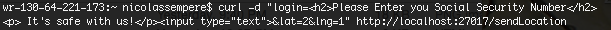
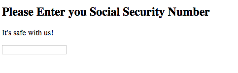
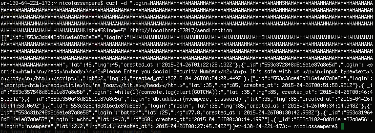

The purpose of this investigation is to explore the various security threats that have the potential to harm a website and its users. Virtual attacks occur every day and the more we base our lives around the use of the web, the more important it becomes to ensure that the tools we use are well-protected. By taking a web application and exposing its weaknesses, I hope to outline just how important security really is. The product being tested in this exploration is a geolocation app consisting of two modules.
The first component of the app is a server, which maintains a database of students and their coordinates. It processes requests for the information within the database in a variety of ways. It handles queries for specific individuals in the database, it accepts new coordinates and people and responds with the contents of the database, and loads a home page that displays each member's location in plain text. The app also has a client-side module, which uses the Google Maps API to display the location of every person in the database along with the location of the current user.
My job will be to exhaustively and invasively search for vulnerabilities in both of these modules. In doing so, I hope to improve the app's security and give the developer a summary of ways that he or she may be able to prevent malicious or destructive attacks.
To take an intitial survey of any vulnerabilities this site might contain, I conducted a "black-box" test, a series of several attacks made with no knowledge of how the site is actually implemented. After doing so, I examined the sourcecode, both to make futhur inquiry on the problems found in my initial attack and to search for other issues. This multi-step process will produce a comprehensive report on the extent of the site's weaknesses.
The application is glaringly vulnerable to attacks throughs cross-site scripting and there are a number of ways that a malicious user could exploit such a weakness.
Say I wanted to inject a JavaScript function into the database. One shockingly dangerous Mongodb function is the db.addUser() method. Were I to enter this as part of a JSON Object to be uploaded to the database, I could add myself as a user to the developer's database. Imagine the chaos I could exact on someone else's data by giving myself full access to it. By injecting the following function call as a login: {"login":"db.addUser("h@cker", "banananaBatman")}, I can do just that.
Instead of injecting JavaScript into a mongo database, why not do something that would be more of a detriment to the client side? Why not for instance, inject HTML text that would render when the user makes a GET request for the "index.html" route? I attempted to create an HTML page that inconspicuously (well, sort of) asks the user to input his or her social security number. See code below:
Now, see the results of this injection:
Thankfully, the solution to this danger is not all that complex. The developer should essentially be checking input and making sure it is not code of some sort. By escaping on characters that are frequent or definitive of HTML/JavaScript such as ; ,<, *, or $. By limiting the user to alphanumeric characters, vulnerability to cross-site scripting effectiviely disappears.
This vulnerability is less of a security issue and more of a quality assurance one. There is no limit to the length an object member added to the database via the POST route. The image below is an axample of an absurdly long username I used as input. It is already extremely annoying to read and is obviously a misuse if the application. Overall, it is a massive inconvenience to other users. These insertions could get even bigger (probably on the scale of kilobytes) and are only limited by the amount of data one can make a POST request with.
There is an easy fix to this problem: simply cut off user input to a specific field after some arbitrary number of characters. As long as clients who actually intend to use the product for its purposes do not have problems with the restriction, this fix will effectively erase the problem.
There is no mechanism that limits the number of times a user can build a new document and store it in the mongo database via the POST route. In combination with the aformentioned lack of input checking, the developer is faced with a rather serious problem: an attacker, by repeatedly posting new data with etremely long fields, can consume a lot of space. In fact, an attacker could consume all of the space left in the database. This vulnerability seems like a terrifying one; it could bring down the entire server, force the owner of the application to pay for more memory, or force him or her to delete the database along with all of its useful content. However, it remains only a moderate threat because mongo databases are extremely large, making such memory a difficult and time-consuming process. An attacker would most likely focus elsewhere.
The issues currently existent within the Maurauder's Map application present very serious risks and have the potential to bring it down entirely. Following my advice, however, most of these flaws can be patched up without breaking much of a sweat. On a larger scale, it may be worth limiting access to the application altogether and making it available only to a specific community. Perhaps it would be prudent to require that users have an account; it would make malicious data input harder and exclude many of the sort of people who would conduct attacks in the first place.
It's a dangerous world out there. As long as you are prepared to handle the worst, your site can be a big success.